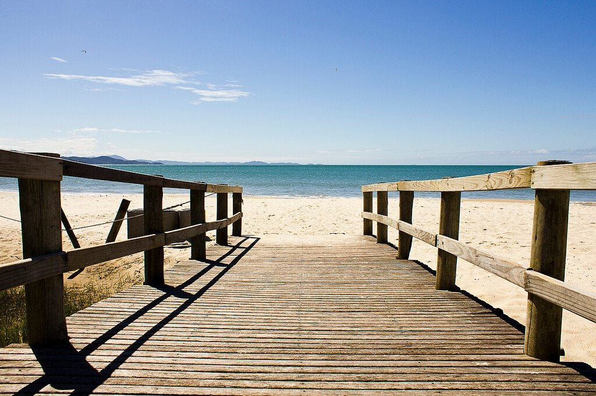

Jurerê é uma das praias mais conhecidas em Floripa e uma das mais procuradas pelos jovens. Em suas redondezas, há
diversos beach clubs, que tornam o local animado não só durante o dia como à noite também. O bairro e a praia estão
divididos em Jurerê Internacional, com construções grandiosas e inovadoras, e Tradicional, com empreendimentos mais
simples e discretos.
A praia tem uma ótima infraestrutura, areia clara, fina e um mar praticamente sem ondas em condições climáticas normais.
Não é das praias mais bonitas da ilha, mas é aquela certa para quem quer azaração e boa estrutura. É também uma ótima
praia para quem está com crianças justamente porque quase não tem ondas!
Jurerê é um lugar muito bom para quem quer se hospedar perto do mar.